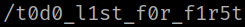

1. Decode the string from the previous step.
$ base64 --decode first_Logo.jpg.out > first_Logo.jpg.out.decoded.txt
$ cat first_Logo.jpg.out.decoded.txt
Output:
You have another message in Hexadecimal.
2. Convert hex to text.
$ echo 2f 74 30 64 30 5f 6c 31 73 74 5f 66 30 72 5f 66 31 72 35 74 | xxd -r -p
Output:

4. Visit http://192.168.12.63/t0d0_l1st_f0r_f1r5t/.
There's a clue.
todo for first:
First: patch the buffer overflow in our secret file ;)
2: remove the temporary upload php file
3: put the server on the World Wide Web 4: profit